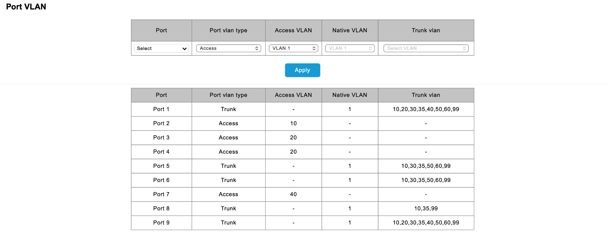

Mapa atualizado da rede
A infraestrutura usa uma firewall, dois switches gerenciáveis ligados por SFP e segmentação por VLANs. O mapa apresenta as ligações principais e os equipamentos ligados a cada área.

Segmentação
VLANs
- 10: Geral
- 20: NAS
- 30: IoT
- 35: Convidados
- 40: Servidores
- 50: Câmaras
- 60: Impressoras
- 99: Gestão
Configuração de portas

Access e trunk: qual é a diferença?
Uma porta access transporta tráfego de uma única VLAN para equipamentos finais; uma porta trunk transporta várias VLANs entre equipamentos compatíveis.